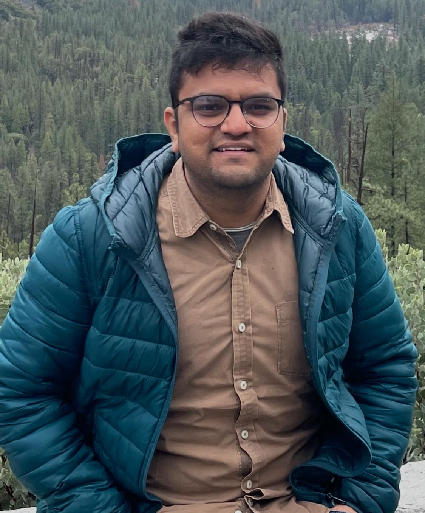
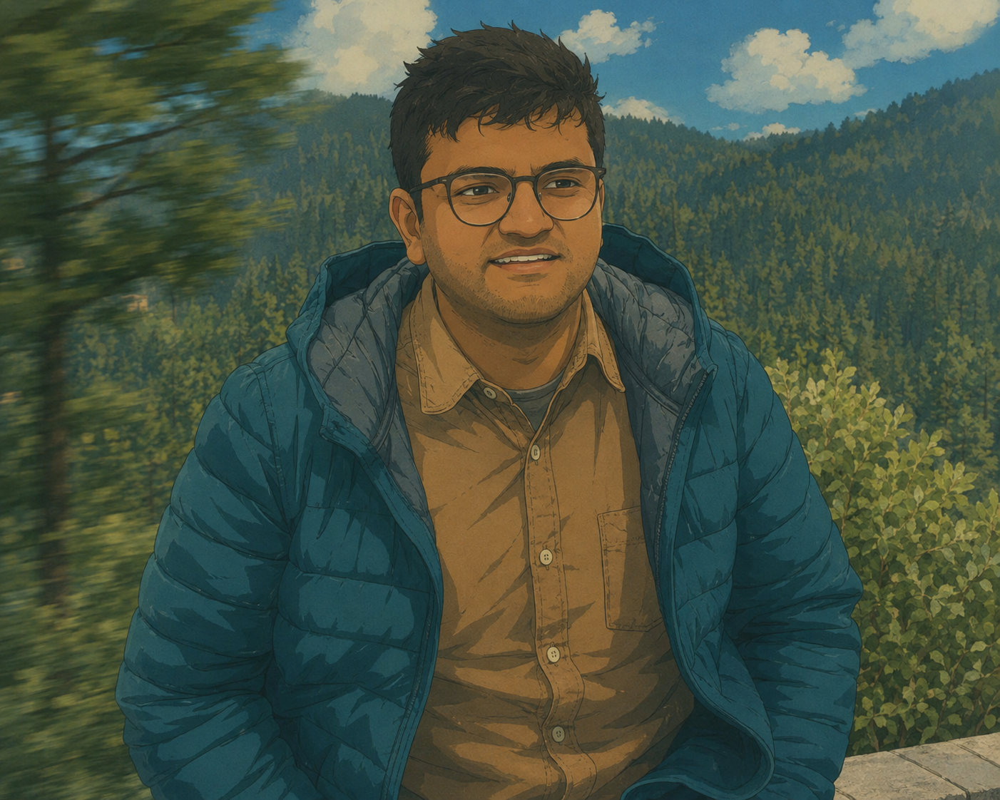

Sunny Bhati
I was a Pre-Doctoral research fellow, advised by Prof. Venkatesh Babu at IISc Bangalore. My research interests include self-supervised learning, representation learning, vision transformers, 3D computer vision, and generative models.
In another life, I obtained Dual Degree from IIT Madras in Engineering Design in 2015, where I worked with Prof. Sandipan Bandyopadhyay, where I worked on Robotics and developing Dynamic Modelling of MacPherson and double wishbone suspension. I also secured Master's Degree in Data Science from Indiana University in 2021.
My research interests lie in computer vision, self-supervised representation learning, vision transformers, and 3D visual understanding. I am particularly interested in understanding how visual foundation models organize object, part, and scene-level representations, and how these representations can be improved for downstream perception and 3D reasoning tasks.
[New] I am currently looking for PhD opportunitues and research collaboration. Please feel free to connect.


Recent News
- [Jun 26]Our work on Rethinking Dataset Distillation on data-efficient learning was featured in Hindu.
- [May 26]Rethinking Dataset Distillation: Hard Truths about Soft Labels: Best Paper Finalist at CVPR 2026!
- [May 24]Joined VAL Lab as a Pre-Doctoral Researcher